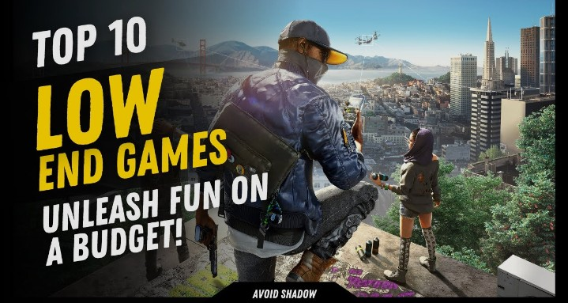

Not every Android phone has a powerful processor, large amount of RAM or high-end graphics hardware. The good news is that you can still enjoy many fun and popular games on budget and older Android devices.
In this guide, we have selected some Android games that are well suited to players who want simpler, lighter or less demanding gaming experiences. However, performance can vary from one phone to another depending on the processor, Android version, available storage, background apps and graphics settings.
Important: There is no universal "2GB RAM" or "3GB RAM" rule that guarantees a game will run smoothly on every device. Always check the current Google Play listing and your phone's compatibility before installing a game.
🏆 Best Low-End Android Games in 2026
-
1. Subway Surfers
Subway Surfers is a popular endless runner where you dodge trains, collect coins and use different boards and power-ups while trying to achieve a high score.
Its simple swipe-based gameplay makes it an excellent choice for players who want quick gaming sessions without complicated controls.
Best for: Endless running and casual gaming
Game type: Runner / Arcade
Official Website: Visit SYBO Games Official Website
Google Play: View Subway Surfers on Google Play
-
2. Hill Climb Racing 2
Hill Climb Racing 2 is a physics-based driving game from Fingersoft. Players race across different environments, upgrade vehicles and compete in various events.
The game combines simple controls with physics-based driving, making it a good option for players who enjoy racing without needing a realistic 3D simulator.
Best for: Casual racing and physics-based gameplay
Game type: Racing / Arcade
Official Website: Visit Fingersoft Official Website
Google Play: View Hill Climb Racing 2 on Google Play
-
3. Ludo King
Ludo King brings the classic Ludo board game to Android and offers different multiplayer options. It is a simple choice for players who want casual gaming with friends and family.
Best for: Board-game fans and multiplayer
Game type: Board / Casual
Official Website: Visit Ludo King Official Website
-
4. Shadow Fight 2
Shadow Fight 2 is a fighting game from Nekki that combines combat with role-playing elements. Players can fight opponents, unlock equipment and progress through the game's story.
Its stylized visual design makes it a good option for players who enjoy fighting games without requiring a highly realistic 3D experience.
Best for: Fighting and action gameplay
Game type: Fighting / RPG
Official Website: Visit Nekki Official Website
-
5. Fruit Ninja
Fruit Ninja is a classic casual action game from Halfbrick. The main idea is simple: slice fruit with swipe controls while trying to achieve a high score.
Best for: Quick casual gaming
Game type: Casual / Action
Official Website: Visit Halfbrick Official Website
-
6. Dr. Driving
Dr. Driving is a driving game focused on completing driving missions rather than traditional high-speed racing. It is a simple option for players who enjoy casual driving challenges.
Best for: Simple driving gameplay
Game type: Driving / Casual
Official Website: Visit SKGames Official Website
-
7. Smash Hit
Smash Hit is an arcade-style game where players move through surreal environments and break glass obstacles using metal balls.
The gameplay is easy to understand, but later sections become more challenging as players need better timing and concentration.
Best for: Casual arcade gameplay
Game type: Arcade / Action
Official Website: Visit Mediocre Official Website
-
8. Crossy Road
Crossy Road is a simple arcade game based around helping characters cross roads, rivers and other obstacles without getting hit.
Its simple controls and stylized graphics make it a fun choice for players who want short and casual gaming sessions.
Best for: Casual arcade gaming
Game type: Arcade / Casual
Official Website: Visit Hipster Whale Official Website
-
9. Alto's Odyssey
Alto's Odyssey is an atmospheric endless sandboarding game featuring simple controls, changing environments and a relaxing visual style.
It is a good option for players who prefer relaxing gameplay rather than competitive multiplayer or demanding action.
Best for: Relaxing casual gameplay
Game type: Endless / Casual
Official Website: Visit Team Alto Official Website
-
10. Jetpack Joyride
Jetpack Joyride is an action-packed endless runner from Halfbrick. Players control Barry Steakfries as he flies through a laboratory, avoids obstacles and collects coins and power-ups.
Its simple controls make it easy to pick up and play, making it another good choice for casual Android gamers.
Best for: Endless action and quick sessions
Game type: Action / Runner
Official Website: Visit Halfbrick Official Website
📱 Can These Games Run on 2GB or 3GB RAM Phones?
Some of the games in this guide may work better on older or budget phones than demanding modern 3D games, but RAM alone does not determine gaming performance.
The processor, GPU, Android version, available storage, thermal condition and background applications can all affect how a game performs.
For this reason, we do not recommend treating "2GB RAM" or "3GB RAM" as a guaranteed compatibility requirement. Instead, check the current Google Play listing for your specific device and keep enough free storage available.
⚙️ How to Improve Gaming Performance on a Low-End Phone
- Close unnecessary background applications before starting a game.
- Keep enough free storage available.
- Use lower graphics settings when a game provides them.
- Keep your Android system and games updated when updates are available.
- Avoid playing demanding games while the phone is overheating.
- Restart the phone if performance becomes unusually slow.
- Use a stable internet connection for online games.
🎮 Best Low-End Games by Category
- Best Endless Runner: Subway Surfers
- Best Casual Racing: Hill Climb Racing 2
- Best Board Game: Ludo King
- Best Fighting Game: Shadow Fight 2
- Best Casual Action: Fruit Ninja
- Best Simple Driving Game: Dr. Driving
- Best Arcade Game: Smash Hit
- Best Casual Challenge: Crossy Road
- Best Relaxing Game: Alto's Odyssey
- Best Endless Action: Jetpack Joyride
🌐 Official Websites and Safe Downloads
When downloading Android games, it is safer to use official sources such as the Google Play Store or the game's official developer or publisher website. Avoid downloading unknown APK files from suspicious websites, especially when they promise modified versions, unlimited coins or unlocked features.
❓ Frequently Asked Questions
What are the best games for low-end Android phones?
Games such as Subway Surfers, Hill Climb Racing 2, Ludo King, Fruit Ninja and other lightweight or stylized games can be good choices for players using budget devices. Actual performance depends on the individual phone.
Can a 2GB RAM phone play Android games?
Yes, some games can work on phones with limited RAM, but RAM is only one part of a phone's performance. The processor, GPU, Android version and available storage also matter.
Can a 3GB RAM phone run games smoothly?
Some games may run well on a 3GB RAM phone, especially simpler games, but there is no universal guarantee. Check the game's current device compatibility information before installing it.
Are low-end Android games offline?
Some games offer offline gameplay, while others require an internet connection for certain features or multiplayer modes. Always check the current Google Play listing for the game you want to play.
Where should I download Android games?
For Android devices, the Google Play Store is the recommended source for official game installations. You can also visit the official developer or publisher website for game information.
How can I make games run better on an old Android phone?
Close unnecessary apps, keep enough free storage, lower graphics settings when available and avoid gaming while the phone is overheating. Restarting the device can also help when background processes are affecting performance.